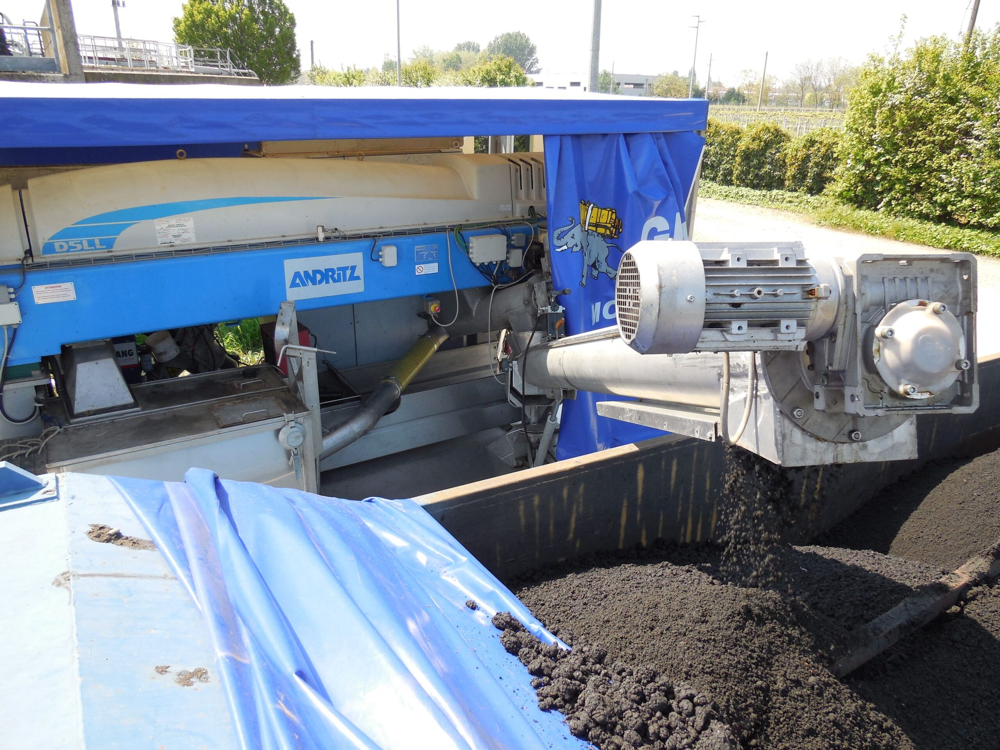
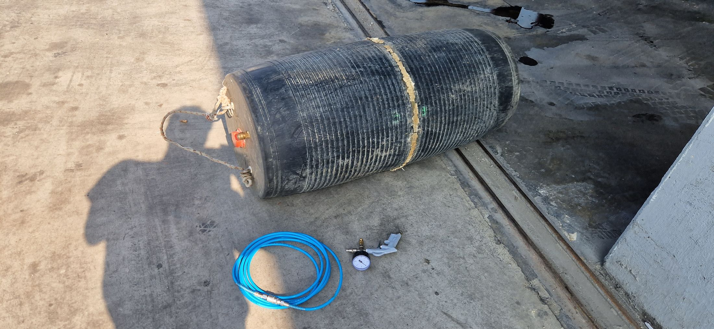
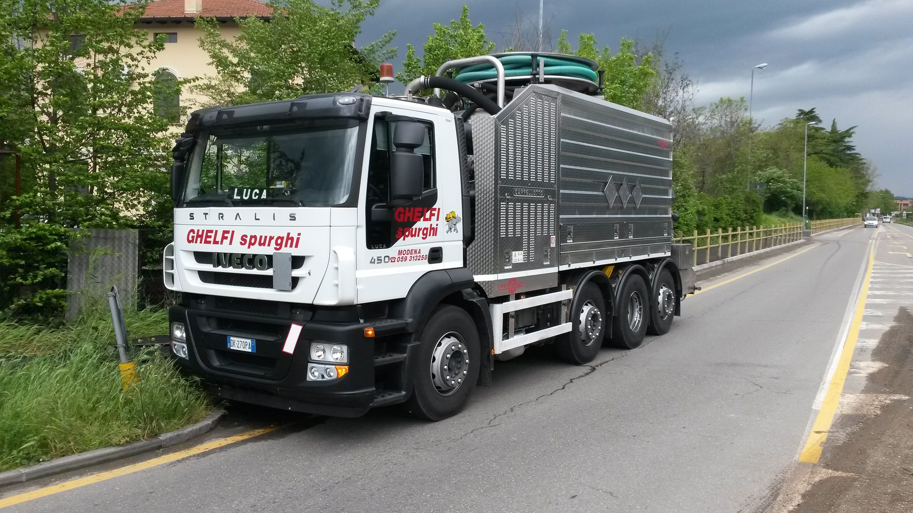
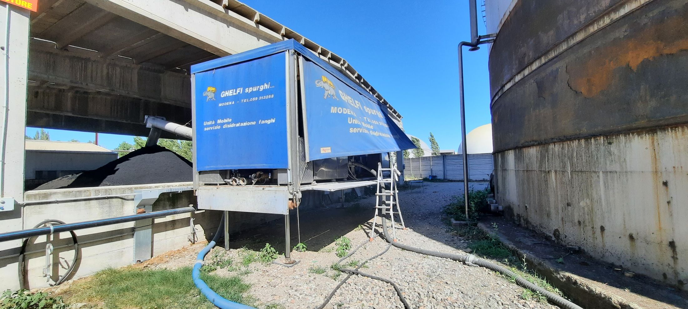
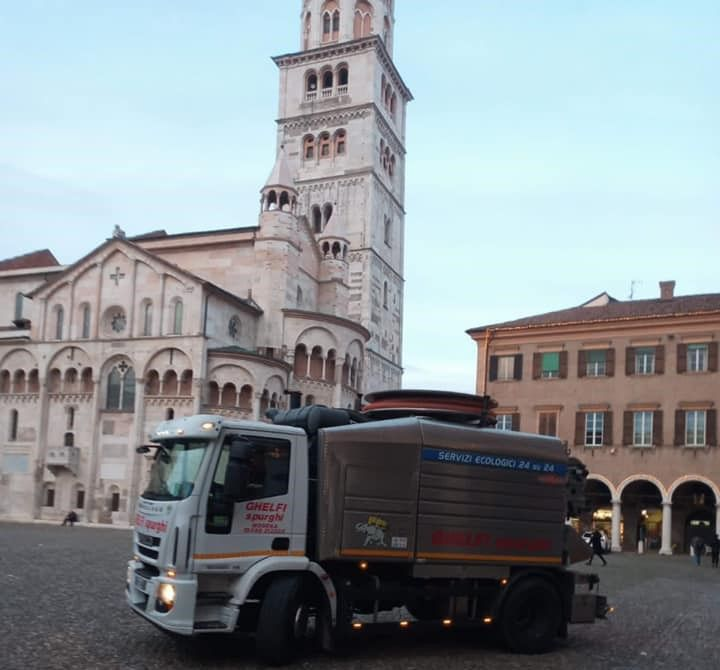
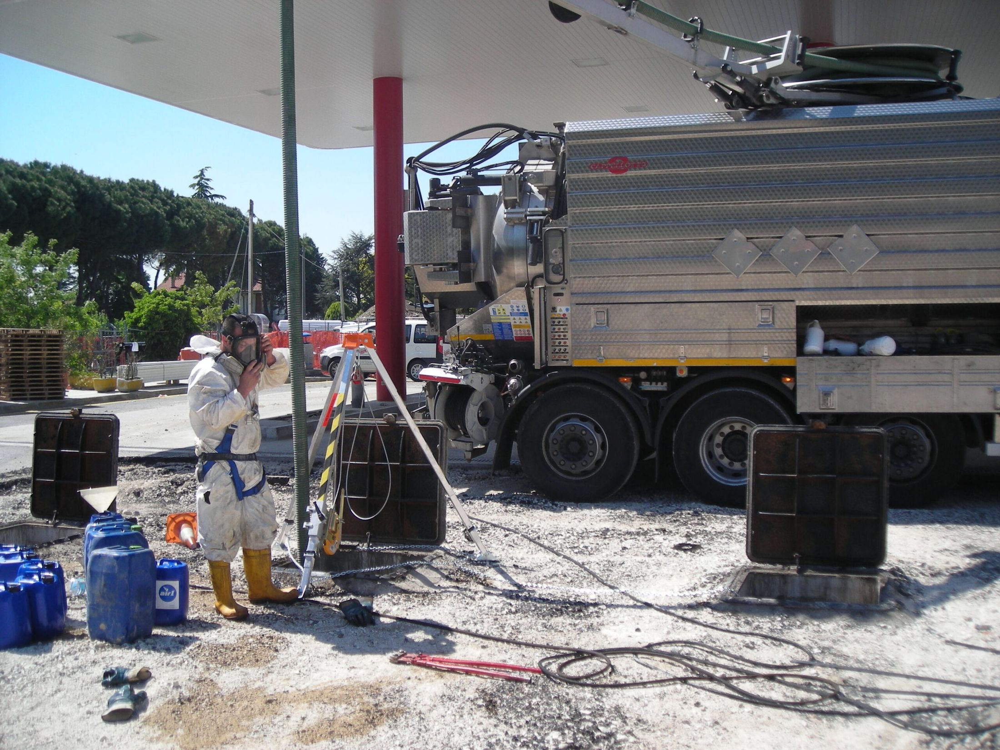
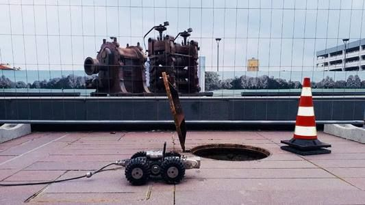

Modena MO
Pulito sotto,tranquilli sopra.
Da 50 anni al vostro servizio
01 — L'azienda
Una realtà del territorio.
Ghelfi Spurghi lavora da Modena. 2a generazione (fondatore Ivano Ghelfi, oggi con i figli Yuri e Luna). Servizi per enti, aziende e privati: autospurghi civili e industriali, disidratazione fanghi con impianti mobili, videoispezioni e collaudi fognari.
02 — I mezzi
Mezzi propri, personale formato.
Ogni intervento parte dalla nostra sede con attrezzature nostre: niente subappalti da coordinare, un solo referente.
03 — Il metodo
Dalla chiamata al documento.
Chiamata: ci dite dove e cosa: fossa, pozzetto, condotta, urgenza. Sopralluogo: valutiamo accesso, volumi e mezzo adatto. Intervento: aspirazione, lavaggio e, se serve, video-ispezione.
04 — Le garanzie
Carte in regola.
ISO 9001, ISO 14001. Certificazioni e iscrizioni dichiarate dall'azienda, consultabili su richiesta.
Servizi
Cosa facciamo, uno per uno.
Aprite il servizio che vi interessa: descrizione e foto dal campo.
Spurgo e pulizia di fosse, pozzetti e condotte, con mezzi attrezzati e smaltimento autorizzato di quanto aspirato.
Ricezione, selezione e avvio a recupero dei materiali, perché tornino a essere risorse.
Ispezione delle condotte con telecamera: si vede il problema prima di scavare.
Gestione dei rifiuti pericolosi con mezzi e imballaggi a norma, dalla classificazione allo smaltimento.
Spurgo e pulizia di fosse, pozzetti e condotte, con mezzi attrezzati e smaltimento autorizzato di quanto aspirato.
Bonifiche con piano di intervento, messa in sicurezza dell'area e smaltimento autorizzato.
Noleggio e manutenzione di bagni chimici per cantieri ed eventi.
Spurgo e pulizia di fosse, pozzetti e condotte, con mezzi attrezzati e smaltimento autorizzato di quanto aspirato.
Dove siamo
Da Modena, a portata di mezzo.
Distanze dalla sede ai capoluoghi vicini, per capire in quanto tempo un mezzo può essere sul posto.
Certificazioni e iscrizioni
Lavora con noi
Autisti, operatori, tecnici: cerchiamo persone che conoscono il territorio.
Mandateci il vostro curriculum: lo leggiamo tutto, e vi richiamiamo.
Contatti
Scriveteci, vi richiamiamo.
Enti, aziende e privati: indicateci il servizio e la zona, vi rispondiamo con tempi e preventivo.